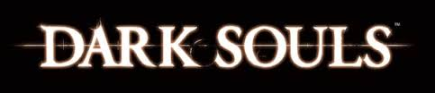

Hidetaka Miyazaki
Father of Souls
Life:
- 1975: was born in Japan
- 2001: considers game design carrer
- 2004: employed by From Software
- 2009: first souls game released
- 2014: promotion to President of FS
- 2012: idea for Bloodbourne was born
- 2015: Release of Bloodbourne
- 2018: Lifetime Achievement Award
- (Golden Joystick Awards)
- TBD: his son was born
Games:
- 2005: Armored Core: Last Raven
- 2006: Armored Core 4
- 2008: Armored Core: For Answer
- 2009: Demon's Souls
- 2011: Dark Souls
- 2014: Dark Souls II
- 2015: Bloodbourne
- 2016: Dark Souls III
- 2018: Déraciné
- 2019: Sekiro
- TBA: Elden Ring